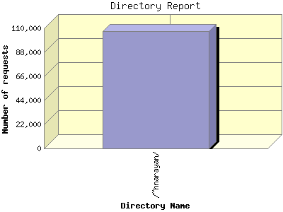

Report generated by Analog 6.0 and Report Magic 2.21
|
Web Server Statistics for "Harish Narayanan (hnarayan) - April 2007" Report generated by Analog 6.0 and Report Magic 2.21 |
The Directory Report analyzes accesses to this web site's directories. This information can be useful in determining the most requested areas.
This report shows all results. This report is sorted by number of requests.

| Directory Name | Number of requests | Percentage of the bytes | |
|---|---|---|---|
| 1. | /~hnarayan/ | 107,302 | 100.00% |
| /~hnarayan/downloads/ | 2,486 | 40.90% | |
| /~hnarayan/downloads/talks/ | 774 | 27.85% | |
| /~hnarayan/downloads/talks/talk11/ | 78 | 12.72% | |
| /~hnarayan/downloads/talks/talk10/ | 29 | 3.53% | |
| /~hnarayan/downloads/talks/talk8/ | 31 | 3.04% | |
| /~hnarayan/downloads/talks/talk12/ | 36 | 2.72% | |
| /~hnarayan/downloads/talks/talk13/ | 44 | 1.68% | |
| /~hnarayan/downloads/talks/talk9/ | 33 | 1.12% | |
| /~hnarayan/downloads/talks/talk2/ | 61 | 0.73% | |
| /~hnarayan/downloads/talks/talk3/ | 64 | 0.66% | |
| /~hnarayan/downloads/talks/talk1/ | 68 | 0.57% | |
| /~hnarayan/downloads/talks/talk5/ | 79 | 0.39% | |
| /~hnarayan/downloads/talks/talk7/ | 81 | 0.25% | |
| /~hnarayan/downloads/talks/talk6/ | 73 | 0.23% | |
| /~hnarayan/downloads/talks/talk4/ | 67 | 0.22% | |
| /~hnarayan/downloads/videos/ | 77 | 6.05% | |
| /~hnarayan/downloads/posters/ | 155 | 3.12% | |
| /~hnarayan/downloads/posters/poster1/ | 110 | 3.12% | |
| /~hnarayan/downloads/images/ | 1,000 | 2.68% | |
| /~hnarayan/downloads/papers/ | 137 | 1.07% | |
| /~hnarayan/downloads/info/ | 71 | 0.08% | |
| /~hnarayan/downloads/mirror/ | 214 | 0.05% | |
| /~hnarayan/downloads/mirror/usnews_images/ | 186 | 0.01% | |
| /~hnarayan/downloads/projects/ | 2 | 0.00% | |
| /~hnarayan/images/ | 20,811 | 33.16% | |
| /~hnarayan/images/photos/ | 14,143 | 15.81% | |
| /~hnarayan/images/photos/larger/ | 1,507 | 12.96% | |
| /~hnarayan/images/photos/thumbs/ | 12,614 | 2.85% | |
| /~hnarayan/images/research/ | 729 | 0.43% | |
| /~hnarayan/images/research/highlights/ | 427 | 0.22% | |
| /~hnarayan/images/portraits/ | 78 | 0.11% | |
| /~hnarayan/images/evaluations/ | 108 | 0.09% | |
| /~hnarayan/images/pages/ | 133 | 0.06% | |
| /~hnarayan/images/pages/evaluations/ | 26 | 0.02% | |
| /~hnarayan/images/slides_alone/ | 410 | 0.03% | |
| /~hnarayan/images/slides_alone/1_files/ | 33 | 0.00% | |
| /~hnarayan/images/slides_alone/2_files/ | 55 | 0.00% | |
| /~hnarayan/images/slides_alone/7_files/ | 44 | 0.00% | |
| /~hnarayan/images/slides_alone/3_files/ | 31 | 0.00% | |
| /~hnarayan/images/slides_alone/4_files/ | 45 | 0.00% | |
| /~hnarayan/images/slides_alone/5_files/ | 34 | 0.00% | |
| /~hnarayan/images/slides_alone/6_files/ | 41 | 0.00% | |
| /~hnarayan/images/icons/ | 562 | 0.02% | |
| /~hnarayan/images/icons/grey/ | 200 | 0.01% | |
| /~hnarayan/images/icons/darkgrey/ | 188 | 0.01% | |
| /~hnarayan/images/icons/lightgrey/ | 173 | 0.01% | |
| /~hnarayan/images/tex/ | 56 | 0.00% | |
| /~hnarayan/images/egss/ | 17 | 0.00% | |
| /~hnarayan/images/campus/ | 3 | 0.00% | |
| /~hnarayan/NewSite/ | 71,600 | 17.22% | |
| /~hnarayan/NewSite/v6/ | 30,630 | 11.53% | |
| /~hnarayan/NewSite/v6/downloads/ | 141 | 8.48% | |
| /~hnarayan/NewSite/v6/images/ | 2,931 | 0.60% | |
| /~hnarayan/NewSite/v6/style/ | 17,439 | 0.20% | |
| /~hnarayan/NewSite/v6/scripts/ | 890 | 0.18% | |
| /~hnarayan/NewSite/v6/icons/ | 2,756 | 0.03% | |
| /~hnarayan/NewSite/v7/ | 21,826 | 4.55% | |
| /~hnarayan/NewSite/v7/downloads/ | 39 | 1.71% | |
| /~hnarayan/NewSite/v7/images/ | 8,178 | 0.41% | |
| /~hnarayan/NewSite/v7/movies/ | 2 | 0.10% | |
| /~hnarayan/NewSite/v7/layout/ | 9,855 | 0.06% | |
| /~hnarayan/NewSite/v7/scripts/ | 435 | 0.05% | |
| /~hnarayan/NewSite/v7/mirror/ | 54 | 0.00% | |
| /~hnarayan/NewSite/v7/style/ | 207 | 0.00% | |
| /~hnarayan/NewSite/v7/flume_reports/ | 20 | 0.00% | |
| /~hnarayan/NewSite/v5/ | 7,899 | 0.62% | |
| /~hnarayan/NewSite/v5/scripts/ | 219 | 0.08% | |
| /~hnarayan/NewSite/v5/style/ | 5,047 | 0.08% | |
| /~hnarayan/NewSite/v5/icons/ | 827 | 0.01% | |
| /~hnarayan/NewSite/v5/lightbox/ | 10 | 0.01% | |
| /~hnarayan/NewSite/v4/ | 6,456 | 0.34% | |
| /~hnarayan/NewSite/v4/style/ | 5,267 | 0.09% | |
| /~hnarayan/NewSite/v3/ | 4,526 | 0.14% | |
| /~hnarayan/NewSite/v3/PGF/ | 4,030 | 0.07% | |
| /~hnarayan/NewSite/v1/ | 71 | 0.02% | |
| /~hnarayan/NewSite/v1/test Files/ | 5 | 0.00% | |
| /~hnarayan/NewSite/v1/PGF/ | 49 | 0.00% | |
| /~hnarayan/NewSite/inspiration/ | 106 | 0.01% | |
| /~hnarayan/NewSite/inspiration/slidingdoors2 Files/ | 42 | 0.00% | |
| /~hnarayan/NewSite/inspiration/digg2f/ | 10 | 0.00% | |
| /~hnarayan/NewSite/inspiration/diggf/ | 10 | 0.00% | |
| /~hnarayan/NewSite/inspiration/centered-tabs-with-css Files/ | 3 | 0.00% | |
| /~hnarayan/NewSite/inspiration/ex10af/ | 6 | 0.00% | |
| /~hnarayan/NewSite/inspiration/final Files/ | 1 | 0.00% | |
| /~hnarayan/NewSite/v2/ | 70 | 0.01% | |
| /~hnarayan/NewSite/v2/test Files/ | 5 | 0.00% | |
| /~hnarayan/NewSite/v2/PGF/ | 55 | 0.00% | |
| /~hnarayan/site/ | 1,366 | 2.46% | |
| /~hnarayan/site/images/ | 322 | 1.76% | |
| /~hnarayan/site/images/smileys/ | 44 | 0.01% | |
| /~hnarayan/site/images/icons/ | 33 | 0.00% | |
| /~hnarayan/site/logs/ | 58 | 0.19% | |
| /~hnarayan/site/broken/ | 307 | 0.17% | |
| /~hnarayan/site/broken/usnews_images/ | 17 | 0.01% | |
| /~hnarayan/site/broken/resume/ | 10 | 0.00% | |
| /~hnarayan/Backup/ | 293 | 1.55% | |
| /~hnarayan/Backup/02Second/ | 228 | 1.52% | |
| /~hnarayan/Backup/02Second/downloads/ | 38 | 1.43% | |
| /~hnarayan/Backup/02Second/images/ | 95 | 0.06% | |
| /~hnarayan/Backup/02Second/gallery/ | 31 | 0.00% | |
| /~hnarayan/Backup/03Third/ | 52 | 0.01% | |
| /~hnarayan/Backup/03Third/v5/ | 48 | 0.01% | |
| /~hnarayan/Backup/03Third/v3/ | 2 | 0.00% | |
| /~hnarayan/Backup/01First/ | 8 | 0.01% | |
| /~hnarayan/Symposium/ | 15 | 1.39% | |
| /~hnarayan/movies/ | 11 | 0.40% | |
| /~hnarayan/gallery/ | 2,645 | 0.13% | |
| /~hnarayan/scripts/ | 127 | 0.10% | |
| /~hnarayan/layout/ | 1,105 | 0.04% | |
| /~hnarayan/layout/images/ | 915 | 0.02% | |
| /~hnarayan/layout/images/gallery/ | 75 | 0.01% | |
| /~hnarayan/layout/images/cloud/ | 745 | 0.01% | |
| /~hnarayan/PS_Screens/ | 27 | 0.01% | |
| /~hnarayan/was-cgi-data/ | 41 | 0.01% | |
| /~hnarayan/krishna/ | 79 | 0.01% | |
| /~hnarayan/sitemap/ | 10 | 0.00% | |
| /~hnarayan/sitemap/sitemap_gen-1.4/ | 9 | 0.00% | |
| /~hnarayan/older/ | 10 | 0.00% | |
| /~hnarayan/style/ | 28 | 0.00% | |
| /~hnarayan/psn-article-local Files/ | 1 | 0.00% | |
| /~hnarayan/mirror/ | 2 | 0.00% | |
This report was generated on May 10, 2007 10:49.
Report time frame April 1, 2007 00:00 to April 30, 2007 23:54.
| Web statistics report produced by: | |
 Analog 6.0 Analog 6.0 |  Report Magic 2.21 Report Magic 2.21 |